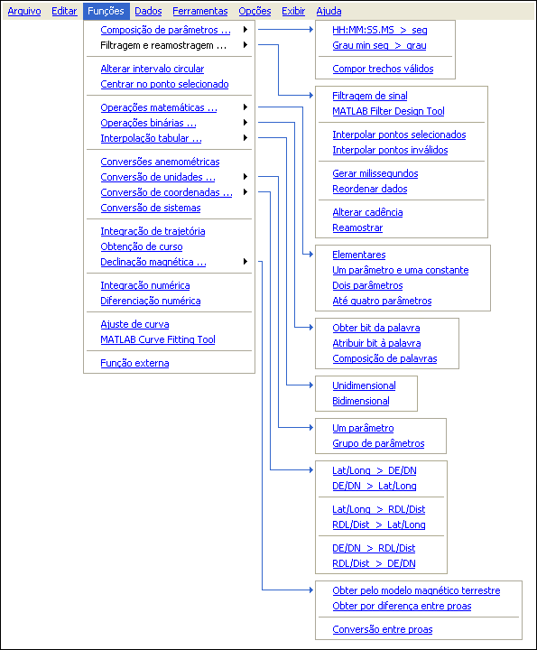

| Menu Funções |
  |
Descrição
O menu “Funções” permite realizar
diversas operações envolvendo um ou mais parâmetros, como calcular
parâmetros
derivados, realizar operações matemáticas, conversões de unidades,
conversões
anemométricas e de coordenadas, alteração de cadência, filtragens,
interpolação, integração, diferenciação e ajustes de curva.

|
Nota: Nota:
Se durante
alguma operação ocorrer esgotamento de memória RAM para o MATLAB
(mensagem de erro
"OUT OF MEMORY"), poderá ocorrer corrupção das matrizes de
trabalho. Nesse caso, reinicie o R_DAT e recarregue o último
arquivo
salvo (o trabalho
não salvo será perdido). |
| |
Início |
Composição de
parâmetros |
|